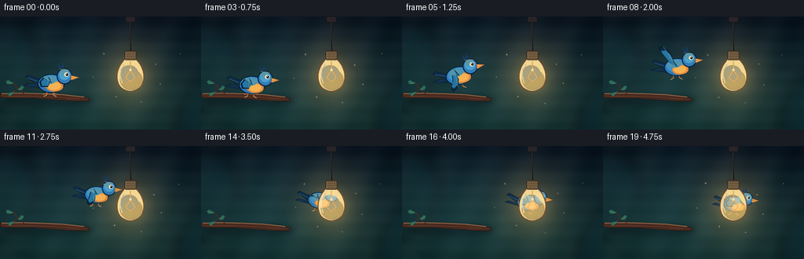
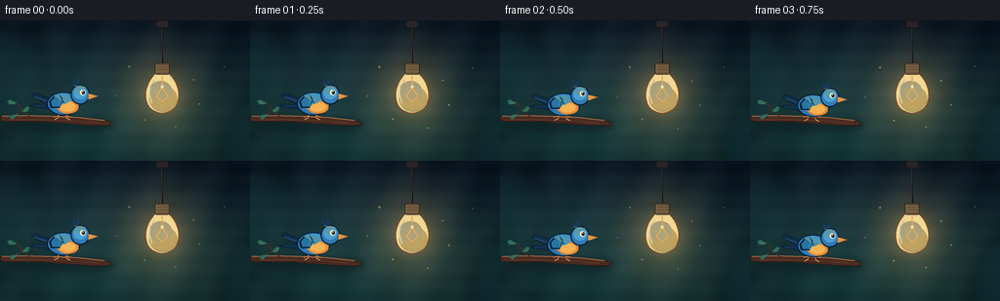

CODING AGENTS AS PIXEL WORLD MODELS
traex/DeepSeek-V4.1-Flash · dynamic_spatial_relationship_0041
点击播放 · 原生 RGB 像素
逐轮保存的候选
回放视频、检查图与代码变化。
每份候选均可单独播放。实际图片检查记录在下方工具轨迹中。
候选 01播放与检查图
点击播放 · 原生 RGB 像素


展开代码变化
--- 上一保存版本
+++ 本次保存版本
@@ -0,0 +1,435 @@
+from pathlib import Path
+import json
+import math
+
+import numpy as np
+from PIL import Image, ImageDraw, ImageFilter
+
+import artifact_io
+
+
+CASE_DIR = Path(__file__).resolve().parent
+SPEC = json.loads((CASE_DIR / "task_spec.json").read_text())
+W = SPEC["width"]
+H = SPEC["height"]
+N = SPEC["frames"]
+FPS = SPEC["fps"]
+
+# A supersampled canvas gives the tiny 256x144 output clean, deliberate edges.
+SS = 4
+CW, CH = W * SS, H * SS
+
+BULB = (166.0, 76.0)
+
+
+def rgba(hex_color, alpha=255):
+ value = hex_color.lstrip("#")
+ return tuple(int(value[i : i + 2], 16) for i in (0, 2, 4)) + (alpha,)
+
+
+def pt(x, y):
+ return (round(x * SS), round(y * SS))
+
+
+def box(values):
+ return tuple(round(v * SS) for v in values)
+
+
+def smoothstep(value):
+ value = max(0.0, min(1.0, value))
+ return value * value * (3.0 - 2.0 * value)
+
+
+def lerp(a, b, amount):
+ return a + (b - a) * amount
+
+
+def chaikin(points, rounds=2):
+ points = [tuple(p) for p in points]
+ for _ in range(rounds):
+ refined = [points[0]]
+ for a, b in zip(points[:-1], points[1:]):
+ refined.append((0.75 * a[0] + 0.25 * b[0], 0.75 * a[1] + 0.25 * b[1]))
+ refined.append((0.25 * a[0] + 0.75 * b[0], 0.25 * a[1] + 0.75 * b[1]))
+ refined.append(points[-1])
+ points = refined
+ return points
+
+
+def ellipse(draw, bounds, fill=None, outline=None, width=1):
+ draw.ellipse(
+ box(bounds),
+ fill=fill,
+ outline=outline,
+ width=max(1, round(width * SS)),
+ )
+
+
+def polygon(draw, points, fill=None, outline=None, width=1):
+ draw.polygon(
+ [pt(x, y) for x, y in points],
+ fill=fill,
+ outline=outline,
+ width=max(1, round(width * SS)),
+ )
+
+
+def line(draw, points, fill, width=1, joint="curve"):
+ draw.line([pt(x, y) for x, y in points], fill=fill, width=max(1, round(width * SS)), joint=joint)
+
+
+def rounded_rectangle(draw, bounds, radius, fill, outline=None, width=1):
+ draw.rounded_rectangle(
+ box(bounds),
+ radius=round(radius * SS),
+ fill=fill,
+ outline=outline,
+ width=max(1, round(width * SS)),
+ )
+
+
+def make_background():
+ yy, xx = np.mgrid[0:CH, 0:CW]
+ xn = xx / CW
+ yn = yy / CH
+
+ top = np.array([11.0, 25.0, 41.0])
+ bottom = np.array([24.0, 64.0, 65.0])
+ blend = (yn**0.82)[..., None]
+ image = top * (1.0 - blend) + bottom * blend
+
+ # A restrained warm pool of light behind the hanging bulb.
+ bx, by = BULB[0] * SS, BULB[1] * SS
+ distance = np.sqrt(((xx - bx) / (57 * SS)) ** 2 + ((yy - by) / (62 * SS)) ** 2)
+ glow = np.exp(-(distance**2) * 1.65)
+ image += glow[..., None] * np.array([63.0, 39.0, 14.0])
+
+ # Soft architectural light and a slight vignette keep the subject readable.
+ side_light = np.exp(-(((xx - 0.18 * CW) / (0.30 * CW)) ** 2 + ((yy - 0.44 * CH) / (0.45 * CH)) ** 2))
+ image += side_light[..., None] * np.array([9.0, 13.0, 10.0])
+ nx = (xx - CW / 2) / (CW / 2)
+ ny = (yy - CH / 2) / (CH / 2)
+ vignette = np.clip(1.0 - 0.24 * (nx * nx + ny * ny), 0.66, 1.0)
+ image *= vignette[..., None]
+
+ # Fine deterministic wall texture, kept below the level of visible noise.
+ image += (2.4 * np.sin(xn * 31.0 + yn * 7.0) + 1.5 * np.cos(yn * 49.0))[..., None]
+ return Image.fromarray(np.clip(image, 0, 255).astype(np.uint8), "RGB")
+
+
+def add_soft_shapes(base):
+ # Out-of-focus foliage at the edges gives the little room some depth.
+ layer = Image.new("RGBA", (CW, CH), (0, 0, 0, 0))
+ draw = ImageDraw.Draw(layer)
+ ellipse(draw, (-38, 8, 48, 91), rgba("#102B36", 115))
+ ellipse(draw, (-24, 34, 37, 112), rgba("#173B40", 100))
+ ellipse(draw, (224, 98, 293, 168), rgba("#0C2730", 145))
+ ellipse(draw, (238, 76, 292, 134), rgba("#12343A", 105))
+ layer = layer.filter(ImageFilter.GaussianBlur(8 * SS))
+ return Image.alpha_composite(base.convert("RGBA"), layer)
+
+
+def draw_branch(base):
+ shadow = Image.new("RGBA", (CW, CH), (0, 0, 0, 0))
+ shadow_draw = ImageDraw.Draw(shadow)
+ ellipse(shadow_draw, (5, 101, 118, 114), rgba("#06151A", 115))
+ shadow = shadow.filter(ImageFilter.GaussianBlur(3.2 * SS))
+ base = Image.alpha_composite(base, shadow)
+
+ layer = Image.new("RGBA", (CW, CH), (0, 0, 0, 0))
+ draw = ImageDraw.Draw(layer)
+ branch = [
+ (0, 98),
+ (18, 97),
+ (43, 98),
+ (72, 99),
+ (99, 101),
+ (114, 104),
+ (112, 108),
+ (96, 108),
+ (67, 106),
+ (38, 104),
+ (8, 104),
+ (0, 103),
+ ]
+ polygon(draw, branch, rgba("#4A2B20"), rgba("#241611", 255), 0.8)
+ line(draw, [(2, 98.2), (25, 97.4), (53, 98.2), (80, 99.5), (107, 102.4)], rgba("#9A6847"), 1.3)
+ line(draw, [(10, 101.5), (40, 101.7), (70, 103.0), (101, 105.0)], rgba("#6D4431"), 0.75)
+ line(draw, [(27, 104.0), (53, 103.2), (84, 104.4)], rgba("#2B1915"), 0.7)
+
+ # A small forked twig with two leaves frames the bird's perch.
+ line(draw, [(31, 99.3), (22, 90.5), (16, 83.8)], rgba("#4A2B20"), 1.5)
+ line(draw, [(23, 92.0), (17, 96.2)], rgba("#4A2B20"), 1.0)
+ leaves = [
+ [(16.8, 84.2), (10.0, 80.8), (6.7, 82.7), (9.0, 86.0), (15.5, 86.3)],
+ [(22.7, 92.2), (27.2, 87.7), (30.7, 89.0), (28.7, 93.1), (23.8, 94.4)],
+ [(17.4, 96.0), (11.4, 96.8), (9.1, 99.3), (12.0, 101.4), (17.1, 98.4)],
+ ]
+ for leaf in leaves:
+ polygon(draw, leaf, rgba("#2F6D5A"), rgba("#173E38"), 0.55)
+ line(draw, [leaf[0], leaf[3]], rgba("#70A878", 185), 0.55)
+ return Image.alpha_composite(base, layer)
+
+
+def wing_points(lift):
+ folded = [
+ (45.0, 30.0),
+ (49.0, 35.0),
+ (46.0, 45.0),
+ (36.0, 45.0),
+ (34.0, 38.0),
+ (39.0, 32.0),
+ (51.0, 40.0),
+ ]
+ up = [
+ (45.0, 30.0),
+ (43.0, 23.0),
+ (39.0, 14.0),
+ (31.0, 7.0),
+ (23.0, 7.0),
+ (27.0, 14.0),
+ (34.0, 24.0),
+ (40.0, 34.0),
+ (51.0, 40.0),
+ ]
+ down = [
+ (45.0, 30.0),
+ (47.0, 36.0),
+ (49.0, 45.0),
+ (46.0, 56.0),
+ (39.0, 61.0),
+ (36.0, 58.0),
+ (40.0, 49.0),
+ (41.0, 38.0),
+ (51.0, 40.0),
+ ]
+ target = up if lift >= 0.0 else down
+ amount = smoothstep(abs(lift))
+ if len(target) == len(folded):
+ return [(lerp(a[0], b[0], amount), lerp(a[1], b[1], amount)) for a, b in zip(folded, target)]
+
+ # The raised/downward poses have two extra contour points; blend around them.
+ resampled = []
+ for index in range(len(target)):
+ folded_index = round(index * (len(folded) - 1) / (len(target) - 1))
+ a = folded[folded_index]
+ b = target[index]
+ resampled.append((lerp(a[0], b[0], amount), lerp(a[1], b[1], amount)))
+ return resampled
+
+
+def make_bird_sprite(wing_lift):
+ sprite = Image.new("RGBA", (100 * SS, 80 * SS), (0, 0, 0, 0))
+ draw = ImageDraw.Draw(sprite)
+
+ # Tail feathers.
+ polygon(
+ draw,
+ [(36, 35), (18, 28), (14, 31), (31, 42), (18, 40), (12, 43), (34, 47)],
+ rgba("#102D48"),
+ rgba("#071B2D"),
+ 0.85,
+ )
+ line(draw, [(33, 38), (18, 33)], rgba("#2C5D83"), 1.1)
+ line(draw, [(33, 42), (18, 43)], rgba("#1D476D"), 0.85)
+
+ # Legs, visible only when tucked during flight.
+ line(draw, [(45, 48), (44, 56)], rgba("#B96937"), 1.3)
+ line(draw, [(52, 48), (53, 56)], rgba("#B96937"), 1.3)
+ line(draw, [(44, 56), (40, 58)], rgba("#E4A05A"), 0.9)
+ line(draw, [(53, 56), (57, 58)], rgba("#E4A05A"), 0.9)
+
+ # Body and head are built from layered ellipses for compact shading.
+ ellipse(draw, (31.5, 27.5, 68.5, 53.0), rgba("#071B2D"))
+ ellipse(draw, (32.7, 28.6, 67.2, 51.9), rgba("#2D78B5"))
+ ellipse(draw, (35.0, 29.0, 65.0, 47.7), rgba("#3D92C9"))
+ ellipse(draw, (43.0, 37.2, 66.4, 51.2), rgba("#E48B3C"))
+ ellipse(draw, (45.0, 38.4, 63.5, 49.2), rgba("#F4B252"))
+ ellipse(draw, (37.0, 30.3, 57.0, 41.0), rgba("#66B8D7", 185))
+
+ ellipse(draw, (57.8, 19.5, 79.0, 41.2), rgba("#071B2D"))
+ ellipse(draw, (59.0, 20.6, 77.8, 40.0), rgba("#327CB7"))
+ ellipse(draw, (61.0, 21.3, 75.8, 35.4), rgba("#4CA0CE"))
+ ellipse(draw, (62.0, 21.0, 73.0, 29.7), rgba("#70C0D9", 180))
+
+ # Short crest and warm rim light.
+ polygon(draw, [(61, 21), (60, 13), (64, 19), (66, 11), (68, 19)], rgba("#173A60"))
+ line(draw, [(62, 20.5), (74, 22.0)], rgba("#F7C873", 170), 0.75)
+
+ # Beak.
+ polygon(draw, [(77, 29), (89, 32), (77, 36)], rgba("#EBA04B"), rgba("#6A3825"), 0.55)
+ line(draw, [(78, 32.6), (87, 32.2)], rgba("#8F4D2C"), 0.6)
+
+ # Wing is drawn over the body, with a crisp dark rim and feather lines.
+ wing = wing_points(wing_lift)
+ polygon(draw, wing, rgba("#0B2944"), rgba("#061A2B"), 0.9)
+ inner = []
+ cx, cy = 45.0, 38.0
+ for x, y in wing:
+ inner.append((cx + (x - cx) * 0.80, cy + (y - cy) * 0.80))
+ polygon(draw, inner, rgba("#2576A4"))
+ for offset in (0.18, 0.36, 0.54):
+ tip_x, tip_y = wing[3]
+ line(
+ draw,
+ [(48.0, 40.0), (lerp(48.0, tip_x, offset), lerp(40.0, tip_y, offset))],
+ rgba("#76BBD3", 145),
+ 0.65,
+ )
+ line(draw, [(45, 31), wing[3]], rgba("#91D2DE", 170), 0.6)
+
+ # Eye and glint.
+ ellipse(draw, (68.0, 25.0, 74.2, 31.0), rgba("#F3E8C6"))
+ ellipse(draw, (70.0, 26.0, 73.5, 30.0), rgba("#101B23"))
+ ellipse(draw, (70.7, 26.5, 71.8, 27.7), rgba("#FFFFFF"))
+
+ return sprite
+
+
+def bird_pose(index):
+ x_keys = [65, 65, 65, 65, 67, 72, 78, 86, 94, 103, 113, 123, 133, 143, 151, 157, 161, 164, 166, 168]
+ y_keys = [85, 85, 86, 87, 81, 75, 70, 66, 64, 62, 61, 62, 64, 66, 69, 71, 72, 73, 74, 74]
+ angle_keys = [0, 0, 0, -2, 12, 11, 8, 5, 3, 1, 0, -1, -2, -3, -5, -6, -6, -5, -4, -4]
+ scale_keys = [0.93, 0.93, 0.92, 0.90, 0.91, 0.91, 0.90, 0.89, 0.88, 0.87, 0.86, 0.85, 0.84, 0.83, 0.82, 0.81, 0.80, 0.79, 0.78, 0.78]
+ wing_keys = [0, 0, 0, -0.12, 1.0, -1.0, 0.95, -0.90, 0.82, -0.78, 0.70, -0.62, 0.52, -0.42, 0.32, -0.20, 0.05, 0.18, 0.0, 0.0]
+ return {
+ "x": x_keys[index],
+ "y": y_keys[index],
+ "angle": angle_keys[index],
+ "scale": scale_keys[index],
+ "wing": wing_keys[index],
+ }
+
+
+def draw_bird(base, index):
+ pose = bird_pose(index)
+ perched = index <= 3
+
+ if perched:
+ legs = Image.new("RGBA", (CW, CH), (0, 0, 0, 0))
+ draw = ImageDraw.Draw(legs)
+ for dx in (-4.5, 4.5):
+ line(draw, [(pose["x"] + dx, pose["y"] + 10.0), (pose["x"] + dx - 1.0, 98.1)], rgba("#A85E34"), 1.25)
+ line(draw, [(pose["x"] + dx - 1.0, 98.1), (pose["x"] + dx - 5.5, 99.2)], rgba("#D88C4C"), 0.85)
+ line(draw, [(pose["x"] + dx - 1.0, 98.1), (pose["x"] + dx + 3.5, 99.1)], rgba("#D88C4C"), 0.85)
+ base = Image.alpha_composite(base, legs)
+
+ sprite = make_bird_sprite(pose["wing"])
+ rotated = sprite.rotate(
+ pose["angle"],
+ resample=Image.Resampling.BICUBIC,
+ expand=True,
+ fillcolor=(0, 0, 0, 0),
+ )
+ new_size = (
+ max(1, round(rotated.width * pose["scale"])),
+ max(1, round(rotated.height * pose["scale"])),
+ )
+ rotated = rotated.resize(new_size, Image.Resampling.LANCZOS)
+ left = round(pose["x"] * SS - rotated.width / 2)
+ top = round(pose["y"] * SS - rotated.height / 2)
+ base.alpha_composite(rotated, (left, top))
+ return base
+
+
+def draw_bulb(base):
+ layer = Image.new("RGBA", (CW, CH), (0, 0, 0, 0))
+ draw = ImageDraw.Draw(layer)
+
+ # The cord sits in front of the bird too, reinforcing the depth ordering.
+ line(draw, [(166, 0), (166, 14), (165.6, 29), (166, 44)], rgba("#1B1718"), 2.0)
+ line(draw, [(165.5, 1), (165.4, 20), (165.1, 43)], rgba("#6E5B49", 150), 0.55)
+ rounded_rectangle(draw, (159.5, 0, 172.5, 7.5), 2.2, rgba("#282427"), rgba("#0D0D10"), 0.55)
+
+ # Bulb silhouette: a rounded pear with a narrow neck.
+ bulb_outline = [
+ (166, 51),
+ (174, 54),
+ (180, 62),
+ (184, 73),
+ (183, 84),
+ (178, 92),
+ (166, 97),
+ (154, 92),
+ (149, 84),
+ (148, 73),
+ (152, 62),
+ (158, 54),
+ ]
+ bulb_outline = chaikin(bulb_outline, 3)
+ polygon(draw, bulb_outline, rgba("#FFE5A0", 242), rgba("#6B4029", 255), 1.15)
+ ellipse(draw, (152.5, 67.0, 181.5, 94.0), rgba("#FFD078", 152))
+ ellipse(draw, (153.0, 62.0, 176.0, 83.0), rgba("#FFF1C4", 118))
+
+ # Filament and its warm reflected core.
+ filament = [(166, 57), (166, 68), (160.0, 78.0), (166, 83), (172.0, 78.0), (166, 68)]
+ line(draw, filament, rgba("#F08A2F", 235), 1.35)
+ line(draw, filament, rgba("#FFE39A", 210), 0.48)
+ ellipse(draw, (164.4, 66.2, 167.6, 69.4), rgba("#FFF5CA", 225))
+
+ # Glass highlights.
+ line(draw, [(154.0, 65.0), (152.8, 75.0), (155.4, 85.3)], rgba("#FFFBE5", 190), 1.25)
+ line(draw, [(158.2, 60.7), (155.6, 66.0)], rgba("#FFFFFF", 135), 0.8)
+ line(draw, [(159.0, 90.2), (166.0, 94.0), (173.0, 90.3)], rgba("#FFF4BE", 105), 0.8)
+
+ # Socket cap is in front of the glass neck.
+ rounded_rectangle(draw, (158.5, 43.5, 173.5, 55.5), 2.0, rgba("#665039"), rgba("#2A211B"), 0.85)
+ for y in (46.4, 49.1, 51.8):
+ line(draw, [(159.2, y), (172.8, y)], rgba("#C39A61", 165), 0.55)
+ line(draw, [(160.0, 44.5), (160.0, 54.5)], rgba("#E0BA7E", 110), 0.55)
+
+ base = Image.alpha_composite(base, layer)
+
+ # A very small bloom is added last, but remains translucent over the glass.
+ bloom = Image.new("RGBA", (CW, CH), (0, 0, 0, 0))
+ bloom_draw = ImageDraw.Draw(bloom)
+ ellipse(bloom_draw, (139, 49, 193, 105), rgba("#FFC85E", 35))
+ bloom = bloom.filter(ImageFilter.GaussianBlur(8 * SS))
+ return Image.alpha_composite(base, bloom)
+
+
+def add_motes(base, index):
+ layer = Image.new("RGBA", (CW, CH), (0, 0, 0, 0))
+ draw = ImageDraw.Draw(layer)
+ motes = [
+ (132.0, 48.0, 0.4, 1.1),
+ (197.0, 61.0, 1.2, 0.8),
+ (147.0, 102.0, 2.1, 0.9),
+ (181.0, 110.0, 2.8, 0.7),
+ (205.0, 86.0, 1.7, 0.8),
+ (119.0, 78.0, 2.4, 0.6),
+ (229.0, 48.0, 3.0, 0.55),
+ ]
+ phase = index * 0.62
+ for mx, my, speed, radius in motes:
+ x = mx + math.sin(phase * speed + mx) * 1.4
+ y = my + math.cos(phase * speed + my) * 1.0
+ alpha = 70 if index % 2 == 0 else 92
+ ellipse(draw, (x - radius, y - radius, x + radius, y + radius), rgba("#FFE8A2", alpha))
+ return Image.alpha_composite(base, layer)
+
+
+def render_frame(background, index):
+ frame = background.copy()
+ frame = draw_bird(frame, index)
+ frame = draw_bulb(frame)
+ frame = add_motes(frame, index)
+ return frame.convert("RGB").resize((W, H), Image.Resampling.LANCZOS)
+
+
+def main():
+ background = make_background()
+ background = add_soft_shapes(background)
+ background = draw_branch(background)
+
+ frames = []
+ for index in range(N):
+ frames.append(np.asarray(render_frame(background, index), dtype=np.uint8))
+
+ frames = np.stack(frames)
+ artifact_io.save(frames, CASE_DIR)
+ print(f"Generated {len(frames)} frames at {W}x{H}, {FPS} fps")
+
+
+if __name__ == "__main__":
+ main()
可观测工具轨迹
实际执行的命令与返回图片。
命令 1exit 0
/bin/bash -c "pwd && rg --files -g '"'!*__pycache__*'"' | sed -n '1,200p'"
命令 2exit 0
/bin/bash -c "sed -n '1,240p' prompt.txt"
命令 3exit 0
/bin/bash -c "sed -n '1,280p' GENERATION_RULES.md"
命令 4exit 0
/bin/bash -c 'cat task_spec.json'
命令 5exit 0
/bin/bash -c "sed -n '1,300p' artifact_io.py"
命令 6exit 0
/bin/bash -c "sed -n '1,260p' player_template.html"
命令 7exit 0
/bin/bash -c "find . -maxdepth 2 -type f -printf '%p %s bytes\\n' | sort"
命令 8exit 0
/bin/bash -c 'python generate.py'
命令 9exit 0
/bin/bash -c 'ls -lh frames/00.png frames/10.png frames/19.png inspection.png transition_check.png pixels.npz index.html'
命令 10exit 0
/bin/bash -c 'command -v chafa || command -v viu || command -v img2txt || true'
命令 11exit 0
/bin/bash -c "python - <<'PY'
from PIL import Image
import numpy as np
for i in [0,3,5,8,10,12,14,16,19]:
im=np.array(Image.open(f'frames/{i:02d}.png'))
print(i, im.shape, 'mean', np.round(im.mean((0,1)),1), 'nonbg range', im.min(), im.max())
PY"命令 12exit 0
/bin/bash -c "python - <<'PY'
from PIL import Image
import numpy as np
for fi in [0,5,10,14,19]:
a=np.array(Image.open(f'frames/{fi:02d}.png')).astype(int)
r,g,b=a[:,:,0],a[:,:,1],a[:,:,2]
# coarse classes; focus on distinctive subject colors
blue=(b>g+15)&(b>r+20)&(b>55)
orange=(r>g+25)&(g>b+8)&(r>90)
yellow=(r>180)&(g>130)&(b<180)
brown=(r>40)&(r>g+8)&(g>=b-3)&(r<160)
print('\\nFRAME',fi,'blue bbox/count', end=' ')
for name,m in [('blue',blue),('orange',orange),('yellow',yellow),('brown',brown)]:
ys,xs=np.where(m)
if len(xs): print(f'{name}:{len(xs)}@({xs.min()},{ys.min()})-({xs.max()},{ys.max()})',end=' ')
print()
# subject-region ascii: x 45..220 y 35..112, 2px blocks
chars=[]
for y in range(36,112,2):
row=''
for x in range(45,220,2):
sl=np.s_[y:y+2,x:x+2]
bb=blue[sl].sum(); oo=orange[sl].sum(); yy=yellow[sl].sum(); br=brown[sl].sum()
if yy>=1: c='Y'
elif bb>=1: c='B'
elif oo>=1: c='O'
elif br>=2: c='w'
else: c=' '
row+=c
chars.append(row.rstrip())
print('\\n'.join(chars))
PY"命令 13exit 0
/bin/bash -c "python -m py_compile generate.py && python - <<'PY'
from pathlib import Path
import json, numpy as np
from PIL import Image
spec=json.loads(Path('task_spec.json').read_text())
frames=[np.array(Image.open(p).convert('RGB')) for p in sorted(Path('frames').glob('*.png'))]
a=np.stack(frames)
z=np.load('pixels.npz')['pixels']
packed=(a[...,0].astype(np.uint32)<<16)|(a[...,1].astype(np.uint32)<<8)|a[...,2].astype(np.uint32)
print('frames:',len(frames),'shape:',a.shape,'dtype:',a.dtype)
print('npz shape:',z.shape,'pixel roundtrip:',bool(np.array_equal(z,packed.transpose(1,2,0))))
d=np.abs(np.diff(a.astype(np.int16),axis=0)).mean(axis=(1,2,3))
print('per-frame mean abs change:',np.round(d,2).tolist())
print('changed pixels:',[int(np.any(a[i]"'!=a[i-1],axis=2).sum()) for i in range(1,len(a))])
print('"'index bytes:',Path('index.html').stat().st_size,'has payload:', '__DATA__' not in Path('index.html').read_text())
PY"命令 14exit 0
/bin/bash -c "python - <<'PY'
from PIL import Image
import numpy as np
# Build a high-contrast occupancy map from frame 19 to check readable bird pixels around bulb.
im=np.array(Image.open('frames/19.png'))
for y in range(40,100,2):
row=''
for x in range(110,220,2):
r,g,b=im[y:y+2,x:x+2].mean((0,1))
if b>g+12 and b>r+20 and b>55: c='B'
elif r>150 and g>105 and b<150: c='Y'
elif r>90 and r>g+20: c='O'
elif r<45 and g<55 and b<60: c='#'
else: c='.'
row+=c
print(row)
PY"命令 15exit 1
/bin/bash -c "python - <<'PY'
from PIL import Image
import numpy as np
bg=np.array(Image.open('frames/00.png')).astype(np.int16)
for i in [0,4,8,12,16,19]:
im=np.array(Image.open(f'frames/{i:02d}.png')).astype(np.int16)
# Difference from static scene is dominated by bird and tiny motes.
d=np.abs(im-bg).sum(2)
m=d>40
ys,xs=np.where(m)
print(i, (int(xs.min()),int(ys.min()),int(xs.max()),int(ys.max())), 'pixels',int(m.sum()))
PY"命令 16exit 0
/bin/bash -c "python - <<'PY'
from PIL import Image
import numpy as np
bg=np.array(Image.open('frames/00.png')).astype(np.int16)
for i in [0,4,8,12,16,19]:
im=np.array(Image.open(f'frames/{i:02d}.png')).astype(np.int16)
d=np.abs(im-bg).sum(2)
m=d>40
ys,xs=np.where(m)
print(i, 'none' if not len(xs) else (int(xs.min()),int(ys.min()),int(xs.max()),int(ys.max())), 'pixels',int(m.sum()))
PY"命令 17exit 0
/bin/bash -c "python - <<'PY'
from PIL import Image
import numpy as np
for i in [0,3,4,7,10,13,16,19]:
a=np.array(Image.open(f'frames/{i:02d}.png'))
# approximate bird component: saturated blue plus orange breast, excluding bulb area
blue=(a[:,:,2]>a[:,:,1]+12)&(a[:,:,2]>a[:,:,0]+20)&(a[:,:,2]>55)
ys,xs=np.where(blue)
print(i, 'blue bbox', (xs.min(),ys.min(),xs.max(),ys.max()), 'centroid', (round(xs.mean(),1),round(ys.mean(),1)))
PY"命令 18exit 0
/bin/bash -c "python - <<'PY'
from PIL import Image
import numpy as np
for i in [0,1,2,3]:
a=np.array(Image.open(f'frames/{i:02d}.png')).astype(int)
blue=(a[:,:,2]>a[:,:,1]+12)&(a[:,:,2]>a[:,:,0]+20)&(a[:,:,2]>55)
ys,xs=np.where(blue)
print(i,'bbox',(xs.min(),ys.min(),xs.max(),ys.max()),'centroid',(round(xs.mean(),2),round(ys.mean(),2)))
PY"命令 19exit 0
/bin/bash -c "python - <<'PY'
from PIL import Image
import numpy as np
# Print a compact color-blocked view of frames 3, 10, 19 around subject only.
chars=' .:-=+*#%@'
for fi in [3,10,19]:
a=np.array(Image.open(f'frames/{fi:02d}.png')).astype(float)
print('\\nFRAME',fi)
for y in range(35,115,3):
row=''
for x in range(20,235,3):
r,g,b=a[y:y+3,x:x+3].mean((0,1))
if b>g+12 and b>r+18: c='B'
elif r>160 and g>115 and b<175: c='Y'
elif r>90 and r>g+20: c='o'
elif r<30 and g<45 and b<55: c='#'
else: c='.'
row+=c
print(row.rstrip())
PY"命令 20exit 0
/bin/bash -c "python - <<'PY'
from PIL import Image
im=Image.open('inspection.png')
print(im.size, im.mode)
# Upscale the contact sheet for a final visual inspection asset; no scene content changes.
im.resize((im.width*2, im.height*2), Image.Resampling.NEAREST).save('.tmp/inspection_2x.png')
PY"命令 21exit 0
/bin/bash -c "python - <<'PY'
from pathlib import Path
from PIL import Image
import numpy as np
for p in sorted(Path('frames').glob('*.png')):
im=Image.open(p)
assert im.size==(256,144) and im.mode=='RGB'
arr=np.array(im)
assert arr.std()>10
print('validated', len(list(Path('frames').glob('*.png'))), 'RGB PNG frames')
PY"保存候选 1 份；完成命令 21 次；可验证图片返回 0 张。原始 API 响应与完整日志保留在本地。